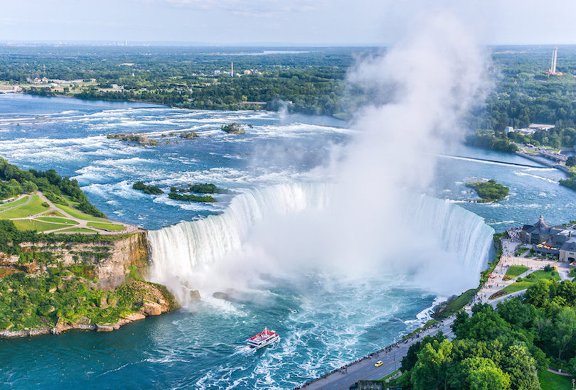

VANCOUVER: Situated between the Coast Mountains and the Pacific Ocean in British Columbia, Vancouver is favored for its majestic landscapes that present a natural playground where tourists can swim in the ocean, rollerblade through scenic parks and snow ski in the mountains all in one day. The third largest metropolitan area in the country, Vancouver is one of the most poplar places to visit in Canada. Vancouver’s star attraction is Stanley Park which covers a huge area of woodlands, gardens and green spaces. Some of the city’s other top sites include Granville Island’s remarkable food market and Chinatown’s vibrant array of shops.Vancouver is consistently named as one of the top five worldwide cities for livability and quality of life,and the Economist Intelligence Unit acknowledged it as the first city ranked among the top-ten of the world's most well-living cities[14] for five consecutive years.Vancouver has hosted many international conferences and events, including the 1954 British Empire and Commonwealth Games, UN Habitat I, Expo 86, the World Police and Fire Games in 1989 and 2009; and the 2010 Winter Olympics and Paralympics which were held in Vancouver and Whistler, a resort community 125 km (78 mi) north of the city.[16] In 2014, following thirty years in California, the TED conference made Vancouver its indefinite home. Several matches of the 2015 FIFA Women's World Cup were played in Vancouver, including the final at BC Place.
BAFF NATIONAL PARK:
 Located in the province of Alberta, the Banff National Park is not only Canada’s first national park, but also one of the nation’s largest and most visited national parks. The park’s breathtaking scenery and wildlife draw many tourists every year along the Trans-Canada Highway, which passes through the park. Banff National Parks large concentration of wildlife includes mammals like black bears, grizzly bears, bison, moose, bighorn sheep, wolves and bald eagles.Rocky Mountain peaks, turquoise glacial lakes, a picture-perfect mountain town and village, abundant wildlife and scenic drives come together in Banff National Park - Canada’s first national park and the flagship of the nation’s park system. Over three million visitors a year make the pilgrimage to the park for a variety of activities including hiking, biking, skiing and camping in some of the world’s most breathtaking mountain scenery. Banff is part of the Canadian Rocky Mountain Parks UNESCO World Heritage Site.
Located in the province of Alberta, the Banff National Park is not only Canada’s first national park, but also one of the nation’s largest and most visited national parks. The park’s breathtaking scenery and wildlife draw many tourists every year along the Trans-Canada Highway, which passes through the park. Banff National Parks large concentration of wildlife includes mammals like black bears, grizzly bears, bison, moose, bighorn sheep, wolves and bald eagles.Rocky Mountain peaks, turquoise glacial lakes, a picture-perfect mountain town and village, abundant wildlife and scenic drives come together in Banff National Park - Canada’s first national park and the flagship of the nation’s park system. Over three million visitors a year make the pilgrimage to the park for a variety of activities including hiking, biking, skiing and camping in some of the world’s most breathtaking mountain scenery. Banff is part of the Canadian Rocky Mountain Parks UNESCO World Heritage Site.
NAIAGRA FALLS,ONTARIO:  Niagara Falls is a series of three awe-inspiring waterfalls situated on the border of Canada’s Ontario and the United States’ New York. The Ontario side of the Falls is called Horseshoe Falls and offers the best views and most attractions. The immediate area surrounding the Falls is a premier tourist spot teeming in observation towers, restaurants, souvenir shops, casinos and high-rise hotels. One of the best places to view the Niagara Falls on the Ontario side is from Queen Victoria Park where the Falls are illuminated and fireworks are displayed nightly during the summer.
MONTREAL: The second largest city in Canada after Toronto, Montreal is the cultural and financial capital of the Quebec province. Boasting the largest French-speaking community outside of Paris, France, Montreal is a bustling metropolis comprised of a downtown district, a historic quarter, entertainment district and several distinctive neighborhoods. Montreal’s main sights include downtown skyscrapers like the Olympic Tower, the historic buildings of Old Montreal and several family attractions like theme and water parks.Montreal (/ˌmɒntriˈɔːl/ MON-tree-AWL, locally /ˌmʌn-/ (About this soundlisten) MUN-; officially Montréal, French: [mɔ̃ʁeal] (About this soundlisten)) is the most populous municipality in the Canadian province of Quebec and the second-most populous municipality in Canada. Originally called Ville-Marie, or "City of Mary", it is named after Mount Royal, the triple-peaked hill in the heart of the city. The city is centred on the Island of Montreal, which took its name from the same source as the city,[16][17] and a few much smaller peripheral islands, the largest of which is Île Bizard. It has a distinct four-season continental climate with warm to hot summers and cold, snowy winters.
WHISTLER: Thanks to a couple of spectacular mountains called Whistler and Blackcomb, the Whistler resort is the largest and most famous alpine ski destination in North America. Located in the Coast Mountains of British Columbia in western Canada, Whistler is a two-hour trip from Vancouver along Canada’s most scenic drive, the Sea-to-Sky Highway. At the base of the two mountains are three quaint villages, Whistler Village, Creekside and Upper Village. The Peak 2 Peak gondola transports visitors from the villages to the mountains.Over two million people visit Whistler annually, primarily for alpine skiing and snowboarding and, in summer, mountain biking at Whistler Blackcomb. Its pedestrian village has won numerous design awards and Whistler has been voted among the top destinations in North America by major ski magazines since the mid-1990s. During the 2010 Winter Olympics, Whistler hosted most of the alpine, Nordic, luge, skeleton, and bobsled events.